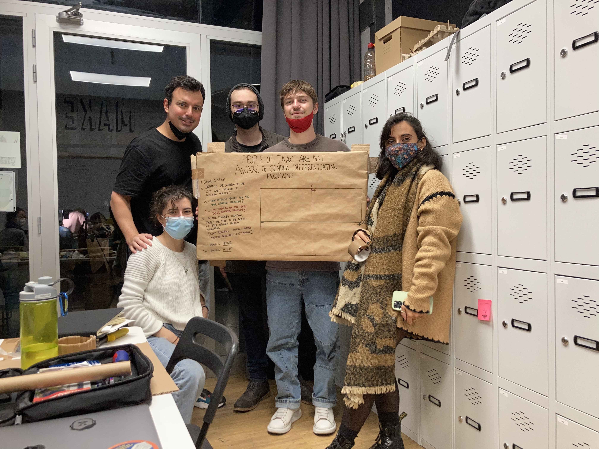

Tech Beyond the Myth
Forensics of the obsolescence
The right to repair, the right to have the control over the surrounding objects. The economic system have the control over our movements. Machines. Objects. Actions. Behaviour.
APPLE Powerbook
Here you can find the link of the report
A world in data
Gender Expressions
Here you can find the link of the report

Almost Useless Machine
The function to make a machine completely useless, with feelings as the central concept. Because a feeling representation machine does not attach to anything functional. At least, is what I understood about the stands of the project. But confuse me, and also I have some philosophical questions about it.
Is semantics useless? Are feelings useless?
As soon as something is useless, it is correlated with something that has only semantic value, such as emotional. Therefore, the very right to be human is useless, according to the logic of the premise, since it is only a semantic value to have a right.
From the point of view of technology, that is what is thought. This could be used to understand the dissipation of those robot-people who work in technology and science and live totally detached from their emotions. Or the same capitalist system that exploits people and does not take emotions into account, because they are "useless", as they do not help to increase the economic profit.
What I am getting at here is the inflection that is created between the industrial system and the individual. Emotions are the language of the subconscious, and without them, we are not and do not exist.
And here becomes the Almost Useless Machine.
Hug me not
Haiko: So close, yet so far. I can almost feel it now. When is it coming?
It represents the frustration of the unfinished. With it consequently the failure of expectation.
For me, as a personal opinion, it also means that discordance between the machine and the person. That identification of embrace without emotion. That broken bridge between the robot's consciousness and the emotional, which sometimes also occurs in people. That emotional gap.
Further information can be found in the links below.
In this link you can watch the video.
In this link you can see the presentation.
Hug me not / hug not me / not hug me / me hug not / me not hug / not me hug